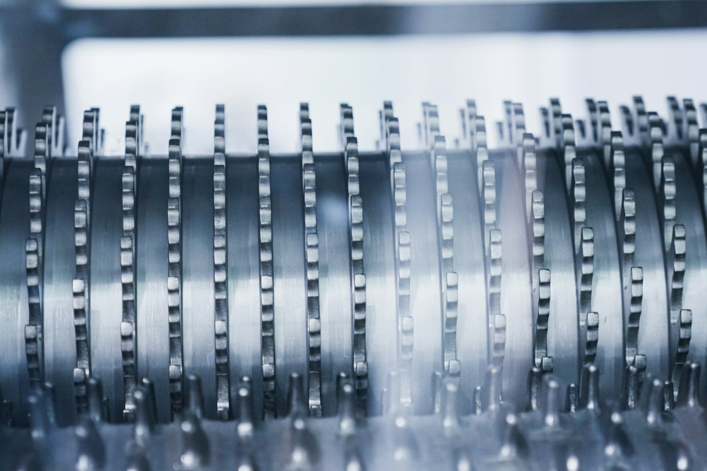

미중 빗장 고착 속 韓, 균형자 아닌 '선택 강요' 구조

[자료사진] 기사와 무관한 이미지입니다.
2025년 10월 미중 정상회담에서 AI 반도체 수출통제 관련 합의는 재차 도출되지 않았다. 엔비디아 H20의 중국 판매 제한은 유지됐고, 중국은 화웨이 Ascend 910C·910D 시리즈 양산을 가속하며 대응하고 있다. 화웨이 Ascend 910B 기준 H100 대비 성능 70~80% 수준이며, 2025년 말까지 910C 양산 목표를 공식화한 상태다.
한국 반도체 산업의 구조적 취약점은 '메모리 강점, 비메모리 취약' 이분법에 있다. 삼성전자·SK하이닉스의 글로벌 DRAM 점유율은 합산 71%(2024년 3분기, TrendForce)로 압도적이나, 팹리스 분야 글로벌 점유율은 1% 미만이다. 미국이 첨단 패키징·게이트올어라운드 GAA 공정에 대한 대중 수출통제를 강화할 경우, 삼성파운드리의 중국 고객사 매출(전체의 약 11%)이 직격탄을 받는다.
중국 반도체 내재화 속도는 미중 갈등이 없었다면 한국을 턱밑까지 위협했을 수준이다(한국일보 인터뷰, 반도체 전문가 발언 인용). 실제로 SMIC는 7nm급 공정을 2023년부터 양산하고 있으며 수율은 삼성·TSMC 대비 30~40%포인트 낮지만 가격 경쟁력으로 보완하고 있다. 미중 제재가 없다면 2027년 SMIC 14nm 이하 공정 점유율이 10%를 넘었을 것이라는 추산이 나온다.
ASML의 실적 경고등은 제재 부메랑의 수치화다. ASML은 2025년 매출 가이던스를 기존 300~350억 유로에서 280~330억 유로로 하향 조정했다. 중국 매출 비중이 2023년 46%에서 2025년 상반기 24%로 급감했으며, 이 공백을 다른 시장이 단기 메우지 못하고 있다. 한국(삼성·SK) 추가 발주가 ASML 실적 하방을 제한하는 유일한 단기 변수다.
미중 기술 격리 고착화가 한국에 주는 신호는 '기회'보다 '의존도 점검'이다. 한국 반도체는 소재·장비의 약 65%를 일본산, 약 20%를 미국산에 의존한다. 중국이 갈륨·게르마늄 수출통제를 유지하면서 소재 비용이 올라가고, 미국이 장비 수출 허가를 강화하면 증설 타이밍이 어긋난다. 두 압력이 동시에 작동하는 구조다.
중국 저가 AI칩(화웨이 Ascend·캠브리콘 등)의 파상공세가 글로벌 빅테크 GPU 수익성을 흔들기 시작했다. 엔비디아의 데이터센터 GPU 평균 판매 단가는 H100 기준 약 3만 달러이나, 화웨이 Ascend 910B는 약 6,000~8,000달러 수준으로 알려져 있다. 중국 내수 AI 인프라 구축에서 화웨이 점유율이 50%를 넘어서면 엔비디아의 중국 포기 비용이 누적된다.
삼성전자·SK하이닉스(단기): 중국 AI 인프라가 화웨이 중심으로 재편되더라도 HBM 수요는 화웨이 Ascend에도 적용된다. 다만 미국의 HBM 대중 수출 규제가 강화되면 이 수혜도 차단된다. 현재 SK하이닉스 HBM3E의 중국향 공급은 허가 대상이며 리스크가 누적 중이다.
ASML 의존도 낮은 일본 소부장: 미중 제재로 ASML 장비 도입이 제한된 중국 팹들이 일본산 중고 장비·대체 장비를 집중 매입하고 있다. 도쿄일렉트론(TEL)의 중국 매출 비중은 2024년 약 40%로, 규제 적용 범위 밖에 있는 제품군은 오히려 수혜를 받는 역설이 발생하고 있다.
ASML: 중국 매출 급감으로 2025년 매출 가이던스가 최대 20억 유로 하향됐다. EUV 장비는 중국 수출이 전면 금지돼 있으며, DUV 장비도 허가 의무화가 확대되고 있다. 2026년까지 미국·일본·네덜란드 협조 체제가 유지되면 ASML의 중국 매출 비중은 10% 이하로 추락할 전망이다.
한국 팹리스 스타트업: 미국 생태계(ARM·Cadence·Synopsys) 의존도가 100%에 가까운 국내 팹리스는 미국이 설계 툴 라이선스 수출 통제를 강화하는 시나리오에서 중국 고객사와의 프로젝트를 전면 중단해야 한다. 해당 매출 비중이 30% 이상인 기업은 실질 리스크가 수면 위로 올라온다.
기업 구매담당자는 '미국 생태계 의존도 자가진단'을 지금 해야 한다. EDA 툴, IP 라이선스, 장비 AS 계약에 미국 기업이 포함된 비중을 파악하고, 해당 계약에 수출통제 조항이 삽입될 경우의 사업 중단 시나리오를 시뮬레이션해야 한다.
투자자는 'ASML 하방=삼성·SK 발주 타이밍'이라는 역관계를 주목하라. ASML 가이던스 하향이 나올 때마다 한국 메모리 2사의 EUV 추가 발주 협상력이 높아진다. 2026년 상반기 삼성전자 파운드리 2nm GAA 공정 전환 물량이 EUV 발주 트리거가 될 가능성이 높다.
실제 조달 현장에서는 — 미중 이분법이 심화될수록 '어느 쪽 생태계 부품이냐'를 먼저 확인하는 관행이 생기고 있다. 미국산 장비로 만들어진 웨이퍼와 중국산 소재가 섞인 패키징이 공존하는 제품이 수출 허가 심사에서 걸리는 사례가 2024년부터 실제로 나오기 시작했다. 공급자 입장에서는 BOM(부품명세서) 단위로 원산지 이력을 관리하는 체계를 지금 구축하지 않으면 2027년 이후 대형 리스크가 현실화된다.
이 포스팅은 쿠팡 파트너스 활동의 일환으로 수수료를 제공받습니다.